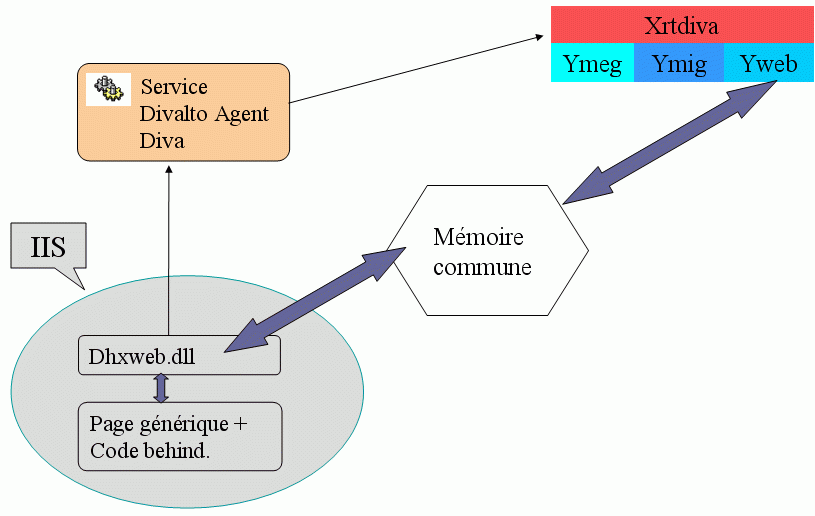

Une session Web est activée lorsqu’une page d’extension .aspx est soumise depuis le Web (.asmx pour un service Web). La réception de cette page est assurée par le gestionnaire de services Internet (IIS) de Microsoft. Son « exécution » nécessite l’installation du Framework .Net de Microsoft.
Le service Divalto Agent Diva doit également s’exécuter (il est lancé automatiquement au démarrage de l’ordinateur). Il a pour mission de lancer et de surveiller les programmes Harmony Diva lorsque des sessions ou des services Web sont activés.
Pour faciliter l’installation de vos serveurs Harmony Web, Divalto fournit un répertoire « exemple » contenant en particulier :
Une page aspx générique qui peut être librement dupliquée et renommée.
Des fichiers de configuration « standard ».
Les dll (assembly .net) nécessaires au dialogue avec les programmes Diva.
Une mini-application (HelloWorld) permettant de réaliser un test de premier niveau.